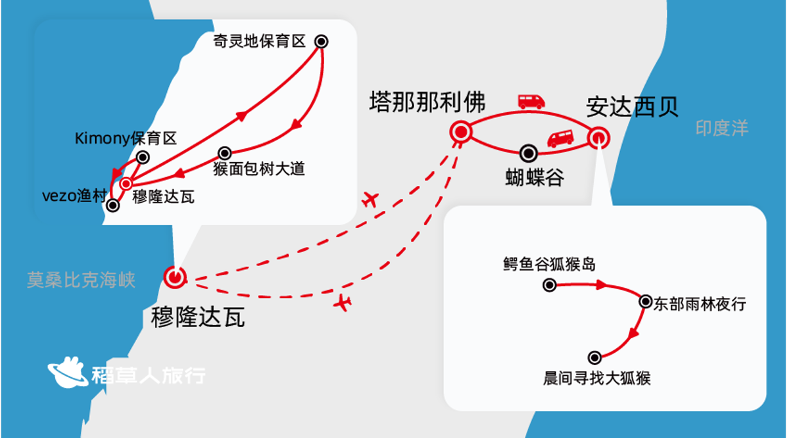

MADAGASCAR · 2026
在岛上，
慢慢看懂。
从高地到雨林，从干旱林到海岸。
把每天要去的地方，和它背后的故事放在一起。
10 天行程3 种地域自然 × 人文
塔那那利佛 → 安达西贝 → 塔那那利佛 ✈ 穆隆达瓦 · 奇灵地 ✈ 塔那那利佛
地点顺序示意，非比例地图展开完整行程图

你提供的旅行社行程图 · 点击查看原图 · 非比例导航地图
行前待确认的地点与安排
向旅行社确认：狐猴岛与蝴蝶谷的外文名称、寻找大狐猴的具体林区、Kimony 园区名称、蓝山行宫是否为 Ambohimanga，以及首都城市行走点位。
航班、住宿与开放情况以出团通知及现场安排为准。行程中的延误预案是旅行社方案，不代表已核实的航班承诺。